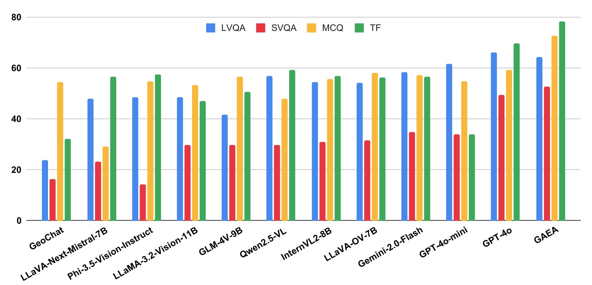
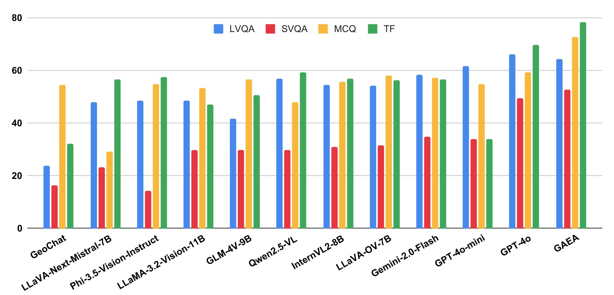

GAEA-1.6M Dataset Overview

Figure: Data Collection and Annotation Pipeline. (Left) GAEA-1.6M includes geographically diverse visual samples from various data sources, such as MP-16, GLD-v2, and CityGuesser68k. (Middle) We also incorporate OpenStreetMap (OSM) metadata and auxiliary context for each image, ranging from climate zones to geographical clues about the country. (Right) Using open-source LLMs and GPT-4o, we generate four diverse question-answer pairs across geolocation, reasoning, and conversational subsets.
GAEA-Bench Curation Pipeline

Figure: Overview of GAEA-Bench. GAEA-Bench is designed to evaluate the conversational abilities of various LMMs across different question types, including MCQs, T/F, and both short and long VQAs. We have carefully selected a subset of 4k samples from MP-16 and generated corresponding OSM metadata to generate QA pairs using GPT-4o. GAEA-Bench aims to fill the gap in conversational benchmarks by incorporating geolocalization capabilities.

Figure: The Evaluation pipeline highlights various question types we introduce in our GAEA-Bench. We use GPT-4o as a judge to score such responses on different criterion.
Figure: Our classification accuracy pipeline evaluates city and country predictions by comparing them against ground truth annotations derived from GPS coordinates, with GPT-4o serving as the evaluator.
Data Statistics
| Statistic | Value |
|---|---|
| Total images | 822,951 |
| Total cities / countries | 41,481 / 234 |
| Total questions | 1,580,531 |
| Total geo-localization questions | 822,951 |
| Total explanatory captions | 384,947 |
| Total open-ended questions | 267,668 |
| Total multiple-choice questions | 48,673 |
| Total true/false questions | 56,292 |
Qualitative Example of GAEA-1.6M

Figure: We showcase various question-types including multiple-choice, true/false, short and long VQAs generated using an open-source model on our GAEA-1.6M dataset. We carefully select geographical tags from OSM metadata to generate diverse question types.
Benchmarking and Evaluations
GAEA is the first model explicitly trained on 1.6 million instructions, incorporating reasoning-based question-answer pairs to provide transparent geolocation predictions, unlike traditional black-box models. We benchmark GAEA against state-of-the-art LMMs and geo-localization models, evaluating performance on diverse question types and standard benchmarks while introducing new datasets for city and country classification.
Evaluation on GAEA-Bench
(1) GAEA achieves the highest average accuracy (66.06%) across decision-making and short-form VQA questions, surpassing GPT-4o by 8.28% and outperforming the best open-source model by 25.69%. However, both open-source and proprietary models struggle with short-form questions, with GPT-4o's accuracy dropping significantly from long to short VQAs.
 

Figure: We benchmark 11 open-source and proprietary LMMs on GAEA-Bench. Notably, GAEA outperforms all open-source models and fares higher than the proprietary models on decision making questions (MCQs and TFs). We provide the relative performance change for each model compared to GAEA.
Standard Geolocalization Evaluation
(2) GAEA performs competitively against specialized geo-localization models, achieving the second-best performance on IM2GPS3k, surpassing GaGA by 2.5% at 25 km and 3.66% at the country level, while also outperforming GeoCLIP across all thresholds. On IM2GPS, it surpasses GaGA at 25 km and 2,500 km, and on GSW-15K, it outperforms GeoCLIP and GeoDecoder in city-level geolocation.

Figure: We benchmark the performance of various specialized models on standard geolocation datasets. GAEA demonstrates competitive results, outperforming GaGA on multiple distance thresholds in both IM2GPS and IM2GPS3k.
Classification Accuracy Results
(3) GAEA outperforms recent LMMs, including LLaVA-OneVision, InternVL, and GLM-4V-9B, in city- and country-level classification across three new datasets, demonstrating its extensive geographical coverage and superior geolocation capabilities.
Figure: Classification accuracy for both city and country labels, where GAEA establishes itself as a strong baseline, surpassing several recent LMMs in performance.
Qualitative examples of various LMMs on GAEA-Bench
We further present various question types in our GAEA-Bench and demonstrate how various LMMs respond to conversational questions equipped with the geo-localization capabilities. Notably, GAEA comprehends the geographic location of the image and responds with the correct output.
Conclusion
We introduced GAEA, the first interactive conversational model with specialized geolocation capabilities, explicitly trained on a large-scale conversational dataset, GAEA-1.6M. We meticulously designed the dataset to enhance GAEA’s reasoning, conversational abilities, and geolocation accuracy. We curated geolocalizable images from MP-16, GLDv2, and CityGuessr68k, enriching them with auxiliary context and metadata, such as geographic clues, and climate zones. In addition to a high-quality instruction set, we present GAEA-Bench, a comprehensive benchmark that evaluates LMMs across multiple question types, including MCQs, True/False, short- and long-VQAs. Our results show that GAEA outperforms recent LMMs on GAEA-Bench, demonstrating strong geolocation and conversational capabilities by leveraging OpenStreetMap (OSM) data. These findings establish GAEA as a strong baseline for future research in geolocalization.
For additional details about GAEA-Bench evaluation and experimental results of GAEA, please refer to our main paper. Thank you!
BibTeX
@misc{campos2025gaeageolocationawareconversational,
title={GAEA: A Geolocation Aware Conversational Model},
author={Ron Campos and Ashmal Vayani and Parth Parag Kulkarni and Rohit Gupta and Aritra Dutta and Mubarak Shah},
year={2025},
eprint={2503.16423},
archivePrefix={arXiv},
primaryClass={cs.CV},
url={https://arxiv.org/abs/2503.16423},
}